Economía Internacional — Clase 1
Hechos estilizados, balanza de pagos y tipo de cambio
19 de marzo de 2026
UMET - Licenciatura en Economía | 2026
¿Qué es la economía internacional?
- Estudia las relaciones económicas entre países
- Los flujos de bienes, servicios, capitales y personas que cruzan fronteras
- Las reglas e instituciones que los gobiernan
- El comercio es la manifestación más visible
La pregunta central del curso
- ¿Cómo se inserta un país en la economía mundial?
- ¿Qué consecuencias tiene eso para su desarrollo?
- Tres dimensiones: comercio, finanzas, producción
- Caso de estudio permanente: Argentina
El mapa del programa
12 clases, 7 unidades
- Primero (Unidad 1): Qué pasó en la historia del comercio y cómo medirlo
- Después (Unidades 2-3): Por qué los países comercian — teorías clásicas y nuevas
- Luego (Unidad 4): Quién gana y quién pierde — la visión estructuralista
- También (Unidades 5-6): Quién organiza el comercio hoy y qué políticas hay
- Finalmente (Unidad 7): Dónde estamos hoy — crisis, guerra comercial, Argentina
¿Cómo se evalúa?
Evaluación continua + coloquio final
- Al final de cada unidad: examen multiple choice en la plataforma
- Algunas preguntas requieren procesar datos (no es solo memorizar)
- Para promocionar: todas las evaluaciones con 7 o más
- Se pueden recuperar las evaluaciones que salieron mal
- Coloquio final: presentación grupal de casos reales
Agenda de hoy
- Presentación del curso y marco general
- Marco analítico: Tecnología + Reglas + Poder
- Las 5 etapas del comercio mundial (1500-2024)
- Los 9 indicadores de la economía internacional
- Hechos estilizados y el caso argentino
- Cierre y anticipar próxima clase
Tecnología + Reglas + Poder
El marco para entender cualquier período
- TECNOLOGÍA: barcos, ferrocarril, telégrafo, containers, internet
- REGLAS: aranceles, tratados, moneda, instituciones (OMC, FMI)
- PODER: hegemonía, imperios, capacidad de imponer reglas
- Las tres deben alinearse para que el comercio florezca
Las 5 etapas: visión general
- 1. Economía-mundo ibérica (1500-1650): plata, especias, imperios
- 2. Primera globalización (1800-1914): vapor, telégrafo, patrón oro
- 3. Colapso (1914-1945): guerras, proteccionismo, depresión
- 4. Bretton Woods (1945-1971): EEUU hegemón, tipos fijos, reconstrucción
- 5. Globalización financiera (1980-hoy): containers, OMC, China
Convergencia, divergencia y comercio
¿Qué explica el crecimiento? ¿Tecnología o comercio?
- PIB per cápita = proxy de desarrollo. ¿Por qué unos países crecen y otros no?
- Dos grandes explicaciones: cambio tecnológico (producir más/mejor) y apertura comercial (acceso a mercados, especialización)
- ¿El comercio causa crecimiento o el crecimiento genera comercio?
- La evidencia: no hay respuesta única. Importa CÓMO te insertás, no solo SI te insertás
La Gran Divergencia

Fuente: Maddison Project Database 2020
- Año 1000: China y Europa tenían un PIB per cápita similar (~$1.100)
- Hasta 1800: diferencias pequeñas. China era una economía avanzada
- Revolución Industrial: UK se dispara. Comercio + tecnología + imperio
- Desde 1980: China converge aceleradamente (de \(1.000 a \)13.000 en 40 años)
Trayectorias regionales
Misma economía mundial, destinos muy distintos
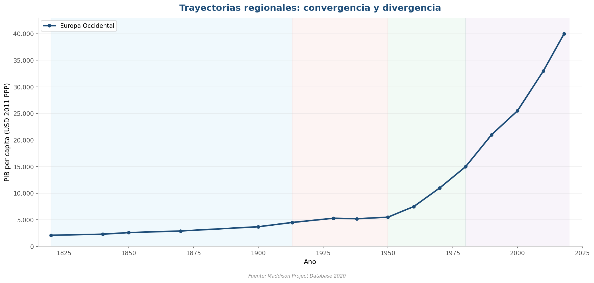
Fuente: Maddison Project Database 2020
- Europa Occidental: de \(2.300 a \)40.000 (x17 en 200 años)
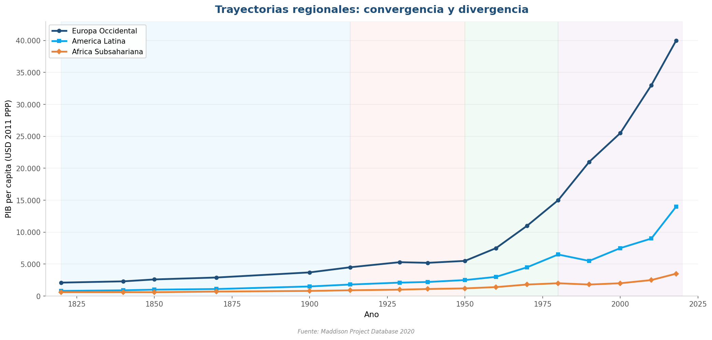
Fuente: Maddison Project Database 2020
- América Latina: creció pero NO convergió. Siempre ~35% de Europa
- África Subsahariana: divergencia persistente. Hoy ~9% de Europa
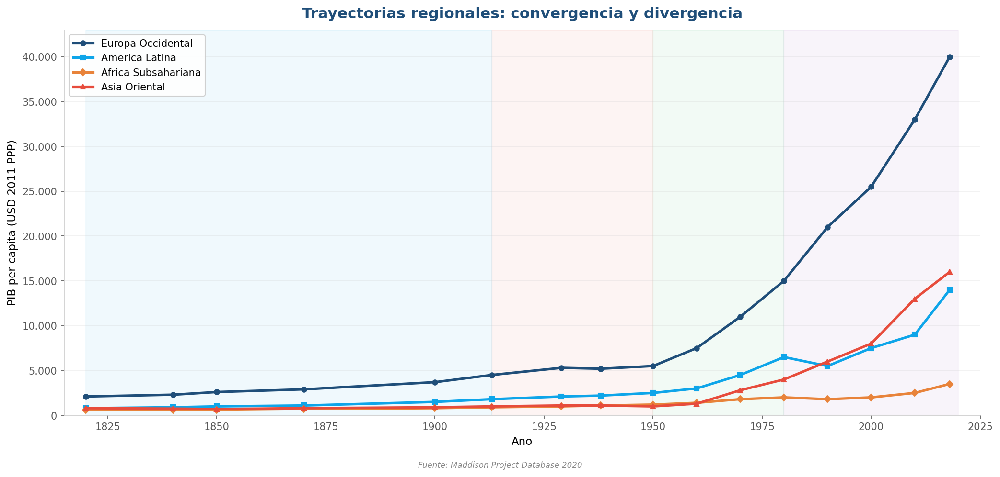
Fuente: Maddison Project Database 2020
- Asia Oriental: estancada hasta 1950, después convergencia acelerada
- Es LA historia de convergencia exitosa del siglo XX
Paso 1 / 3
Etapa 1: Economía-mundo ibérica (1500-1650)

Fuente: Mapas históricos
- España y Portugal conectan 3 continentes
- Flujos: plata americana → Europa → Asia
- Especias, seda, porcelana de vuelta
- Tecnología: carabela. Reglas: monopolio real. Poder: imperios ibéricos
El Galeón de Manila: primera ruta global

Fuente: Ilustración histórica
- Acapulco → Manila → Acapulco (6 meses de viaje)
- Plata mexicana por seda y porcelana china
- Primera globalización real: conectó los 4 continentes
- Monopolio español hasta la independencia de México
Etapa 2: Primera globalización (1800-1914)

Fuente: Federico-Tena World Trade Historical Database
- Revolución del transporte: vapor, ferrocarril
- Revolución de la comunicación: telégrafo
- Patrón oro: una moneda mundial de facto
- Hegemonía británica: Pax Britannica
Las rutas de vapor conectan el mundo

Fuente: Rand McNally, 1917 - Principales rutas de vapor mundiales
- 1840s: líneas regulares de vapor transatlánticas
- El costo del flete marítimo cae un 90% en el siglo XIX
- Las rutas conectan materias primas del Sur con fábricas del Norte
- Argentina, India, Australia: integradas al mercado mundial por el vapor
El telégrafo: la primera internet

Fuente: Eastern Telegraph Company, 1901
- 1866: primer cable transatlántico exitoso
- 1870: Londres conectada con Bombay
- Precios se unifican: arbitraje instantáneo
- Las noticias viajan más rápido que los barcos
Etapa 3: El gran colapso (1914-1945)
Cuando el sistema se rompió
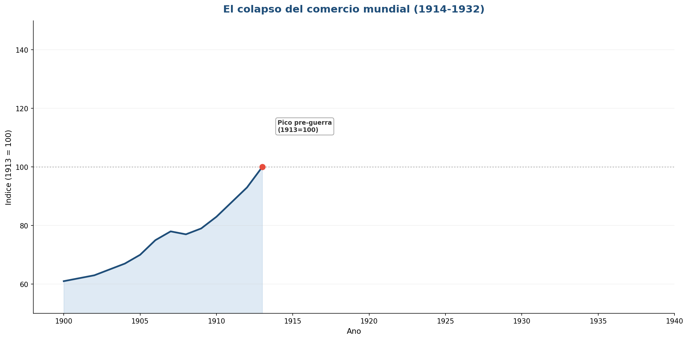
Fuente: Federico-Tena World Trade Historical Database
- 1870-1913: auge del comercio bajo el patrón oro y la Pax Britannica
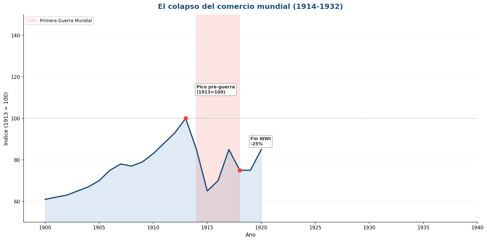
Fuente: Federico-Tena World Trade Historical Database
- 1914-1918: la Primera Guerra Mundial interrumpe los flujos comerciales
- El índice cae abruptamente
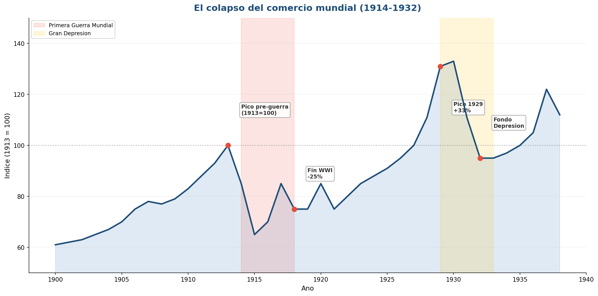
Fuente: Federico-Tena World Trade Historical Database
- 1920s: recuperación parcial. 1930s: Smoot-Hawley y Gran Depresión
- 30 años de retroceso: el sistema se rompió
Paso 1 / 3
El poder detrás del comercio

Fuente: Navy League, 1922 - "Sea Power is World Power"
- Siglo XIX: Pax Britannica, Royal Navy
- 1914-1945: Vacío hegemónico, colapso
- 1945-1971: Pax Americana, Bretton Woods
- 2020s: ¿Transición hegemónica? ¿Fragmentación?
Etapa 4: Bretton Woods (1945-1971)
EEUU reconstruye el sistema
- Después de 30 años de guerras, depresión y proteccionismo, el mundo necesitaba nuevas reglas
- 1944: 44 países se reúnen en Bretton Woods (New Hampshire, EEUU) para diseñar el orden económico de posguerra
- Dólar anclado al oro ($35/onza), otras monedas fijas al dólar
- Se crean tres instituciones: FMI (estabilidad cambiaria), Banco Mundial (reconstrucción) y GATT (reducción de aranceles)
- Comercio crece con tipos de cambio estables pero con controles de capital
El comercio explota bajo Bretton Woods

Fuente: OMC — Evolución del comercio mundial de mercancías
- Las exportaciones se multiplican por 5 entre 1948 y 1970
- El GATT reduce aranceles ronda tras ronda
- Tipos de cambio fijos dan previsibilidad a exportadores
- La "edad dorada" del comercio mundial
Las rondas del GATT: reducción progresiva de aranceles
De 22% a menos de 4% en medio siglo
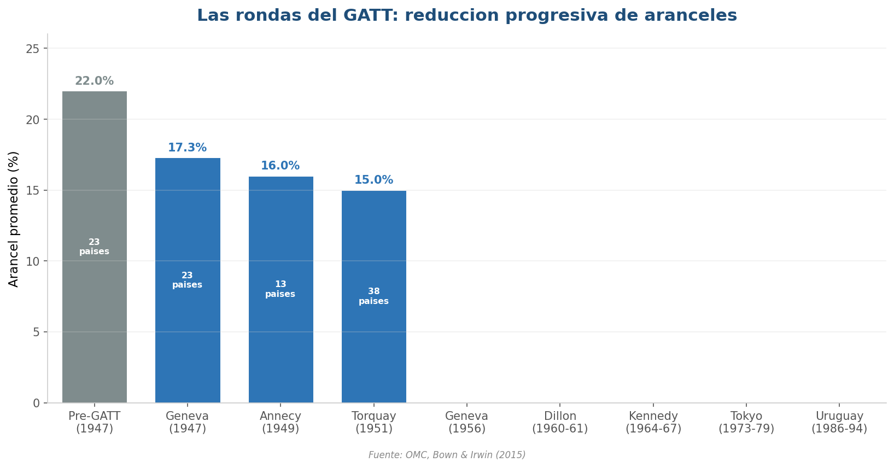
Fuente: OMC, Bown & Irwin (2015)
- Pre-GATT: aranceles al 22%. Primeras 3 rondas (1947-1951): avance gradual
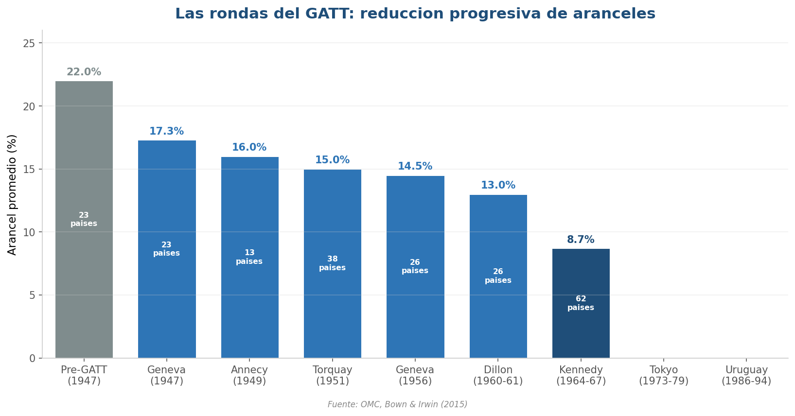
Fuente: OMC, Bown & Irwin (2015)
- Período Bretton Woods: Dillon y Kennedy (1964-67) aceleran la liberalización
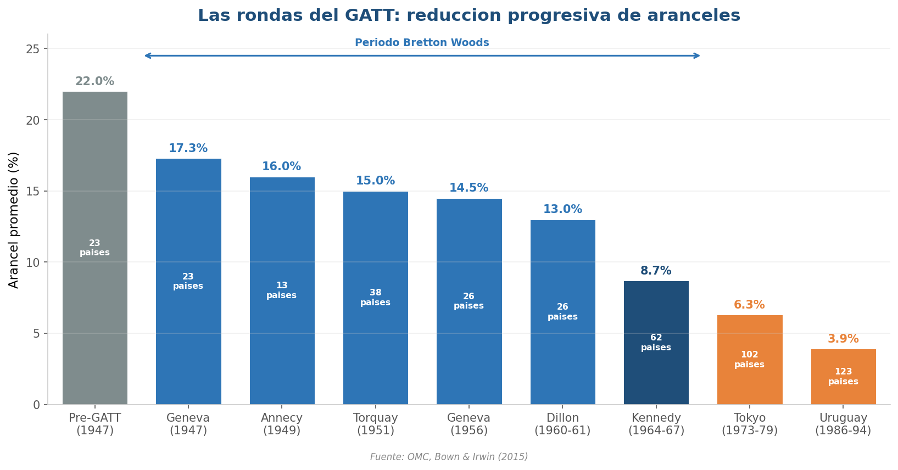
Fuente: OMC, Bown & Irwin (2015)
- Post-BW: Tokyo y Uruguay (→ OMC). De 22% a 3.9% en medio siglo
Paso 1 / 3
Los "Treinta Gloriosos": la edad dorada del capitalismo
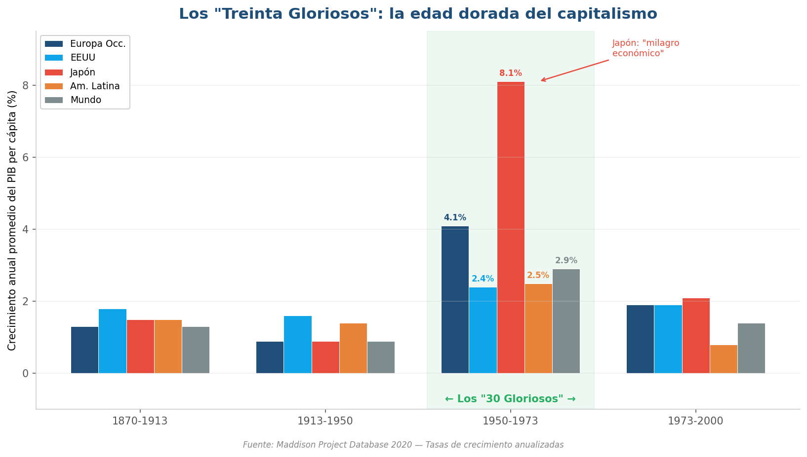
Fuente: Maddison Project Database 2020
- Europa Occidental: 4.1% anual (recuperación + integración)
- Japón: 8.1% anual (el "milagro económico")
- América Latina: 2.5% anual (creció pero no convergió)
- Nunca antes ni después se creció tanto
El dilema de Triffin: la contradicción del sistema
¿Por qué cayó Bretton Woods?
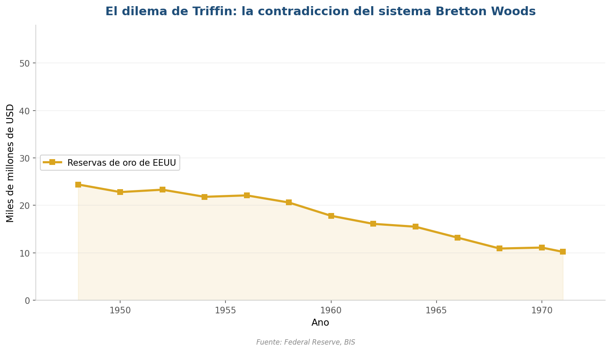
Fuente: Federal Reserve, BIS
- Las reservas de oro de EEUU caen desde $24B: la base del sistema se erosiona
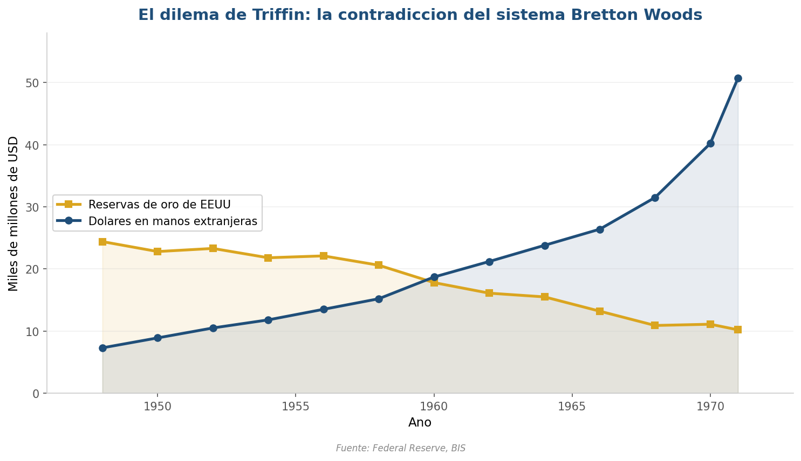
Fuente: Federal Reserve, BIS
- Los dólares en manos extranjeras suben de \(7B a \)50B: cada vez más papel, menos oro
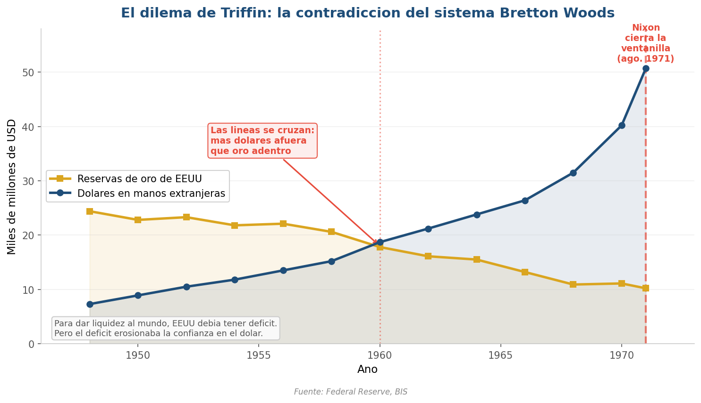
Fuente: Federal Reserve, BIS
- ~1960: las líneas se cruzan. Agosto 1971: Nixon "cierra la ventanilla del oro"
Paso 1 / 3
La paradoja de Bretton Woods
EEUU pierde peso relativo mientras Europa y Japón convergen
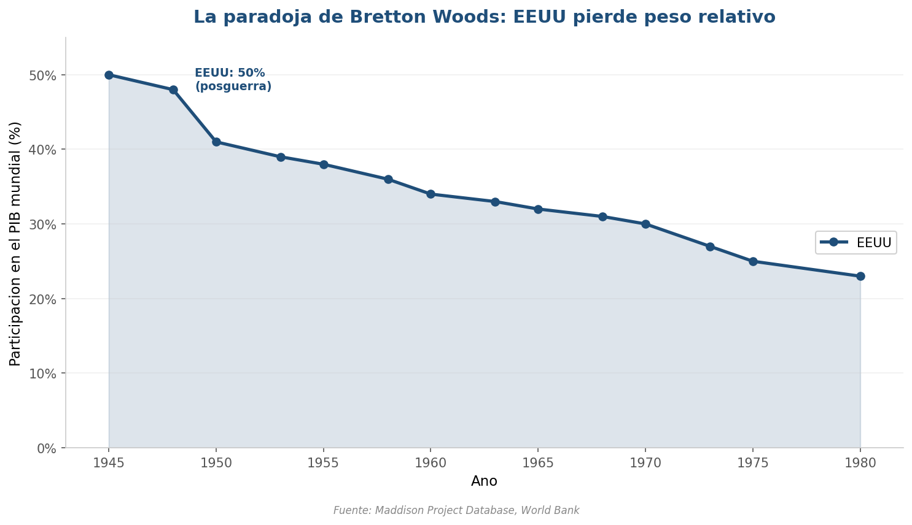
Fuente: Maddison Project Database, Banco Mundial
- 1945: EEUU tiene el 50% del PIB mundial. Diseña el sistema de posguerra
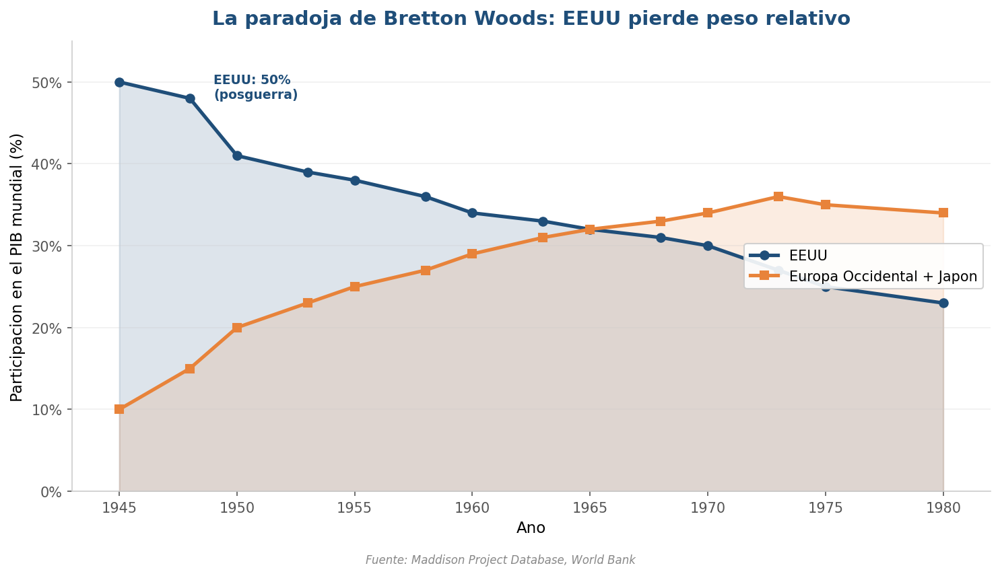
Fuente: Maddison Project Database, Banco Mundial
- Europa y Japón convergen: de 10% a 36% del PIB mundial
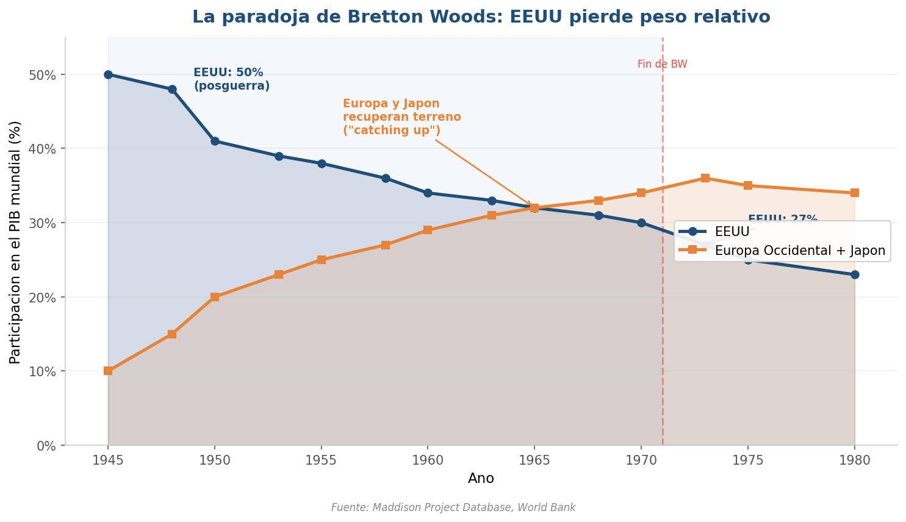
Fuente: Maddison Project Database, Banco Mundial
- Paradoja: el éxito de BW erosionó la hegemonía que lo sostenía
Paso 1 / 3
Etapa 5: Globalización financiera (1980-hoy)
El mundo se achica (de nuevo)
- Desregulación financiera: capitales fluyen libremente
- Revolución logística: containers, just-in-time
- OMC (1995): reglas multilaterales
- China entra a la OMC (2001): la fábrica del mundo
Apertura comercial mundial: tres fases de la globalización
Del 24% al 60% del PIB mundial... y la meseta
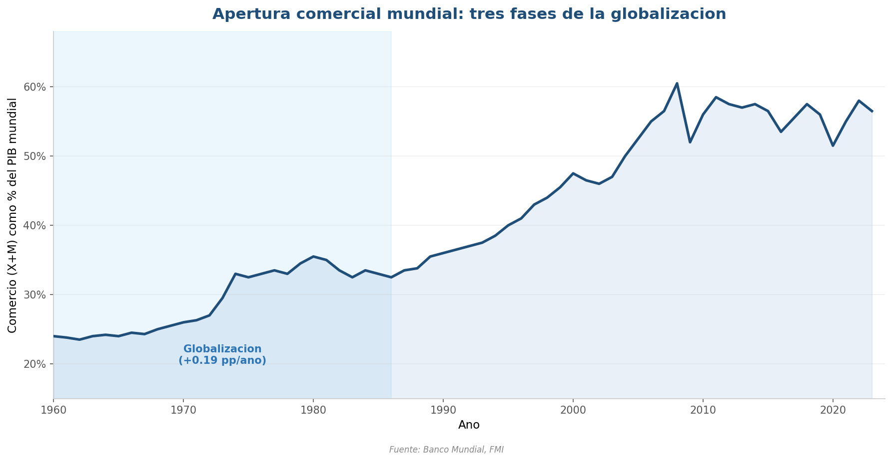
Fuente: Banco Mundial, FMI — "Charting Globalization's Turn to Slowbalization" (2023)
- Globalización lenta (1960-1986): comercio crece al ritmo del PIB (+0.19 pp/año)
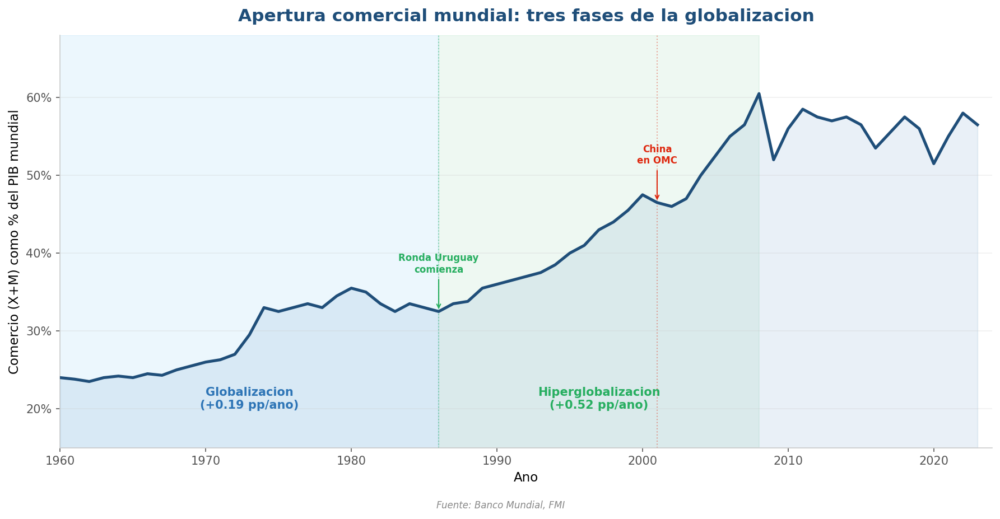
Fuente: Banco Mundial, FMI — "Charting Globalization's Turn to Slowbalization" (2023)
- Hiperglobalización (1986-2008): comercio crece el doble que el PIB (+0.52 pp/año)
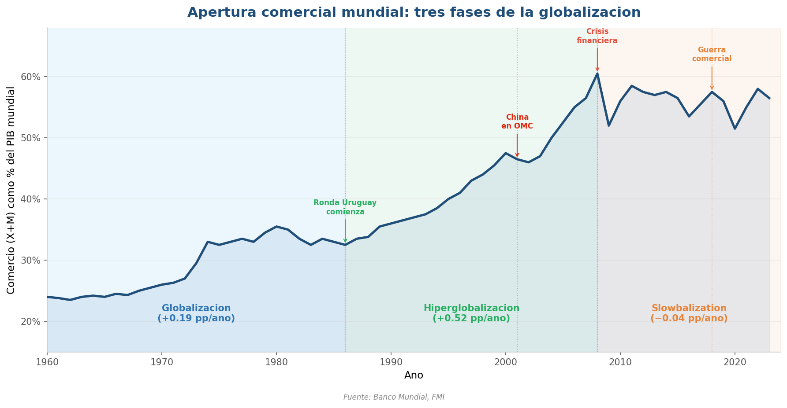
Fuente: Banco Mundial, FMI — "Charting Globalization's Turn to Slowbalization" (2023)
- Slowbalization (2008-hoy): la globalización se frena (−0.04 pp/año). Guerra comercial, COVID, nearshoring
Paso 1 / 3
El ascenso de China: de actor marginal a "fábrica del mundo"
De 0.9% a 15% de las exportaciones mundiales
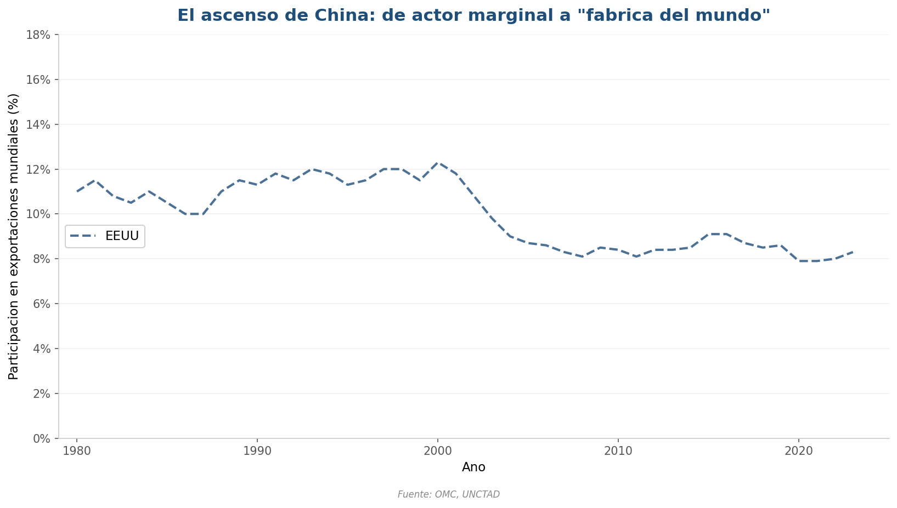
Fuente: OMC, UNCTAD
- EEUU: desde ~12% cae lentamente. En los 80s sigue siendo el líder exportador
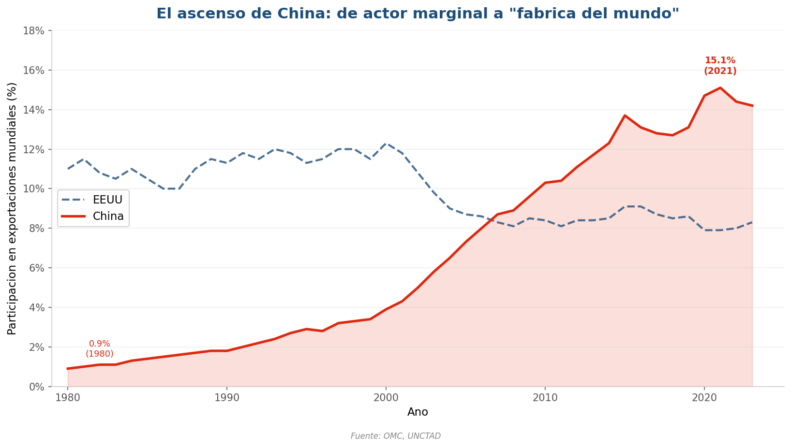
Fuente: OMC, UNCTAD
- China aparece: de 0.9% (1980) empieza a crecer, 2001 ingreso a la OMC
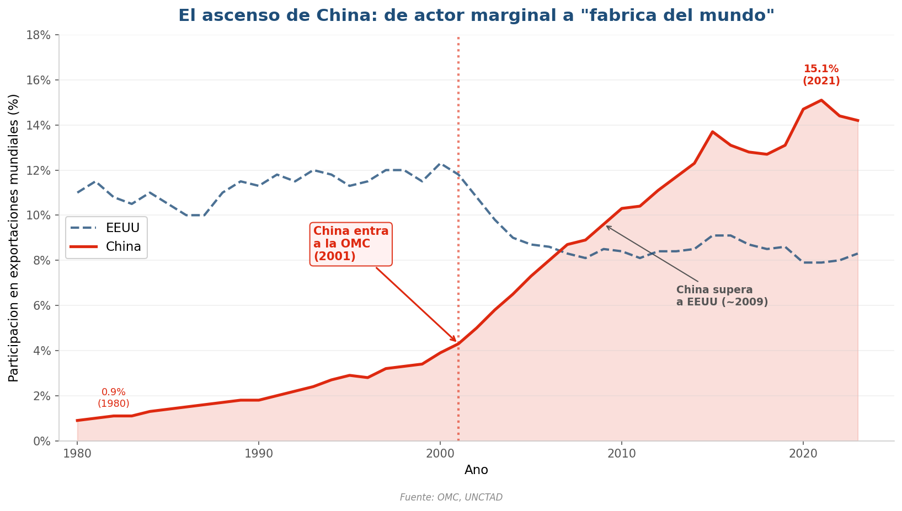
Fuente: OMC, UNCTAD
- 2009: China supera a EEUU. Hoy: ~15% de las exportaciones mundiales
Paso 1 / 3
La revolución tecnológica detrás de la globalización
Los costos se desploman
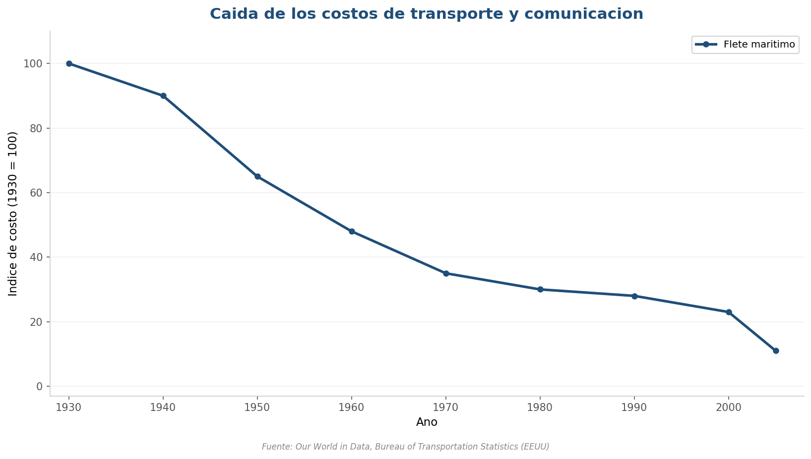
Fuente: Our World in Data, Bureau of Transportation Statistics (EEUU)
- Flete marítimo: caída sostenida desde 1930 (−90%)
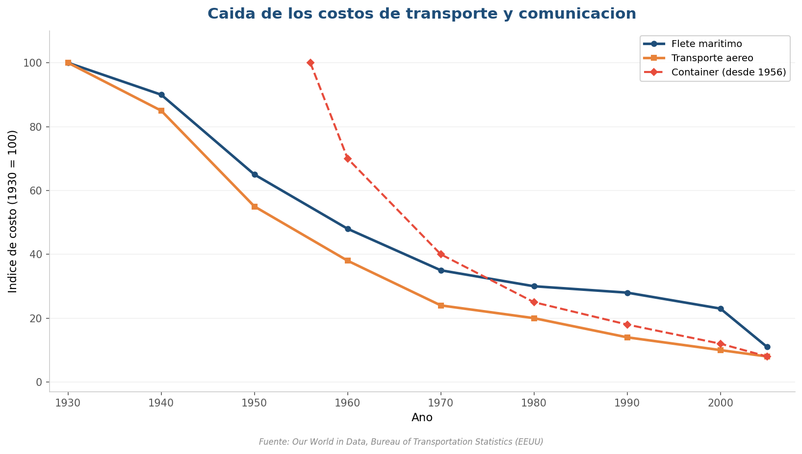
Fuente: Our World in Data, Bureau of Transportation Statistics (EEUU)
- Transporte aéreo (−92%) y container desde 1956: revolución logística
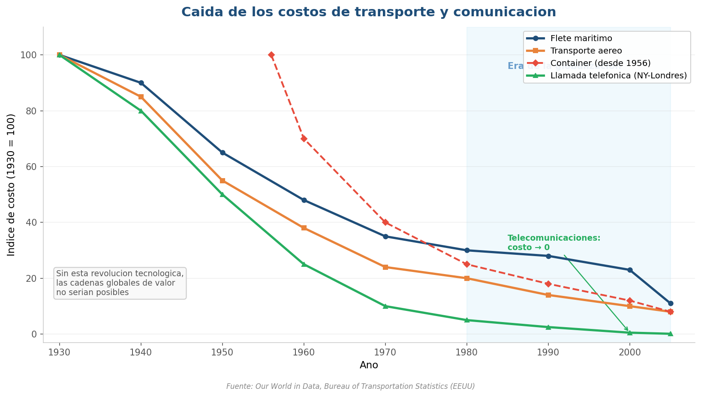
Fuente: Our World in Data, Bureau of Transportation Statistics (EEUU)
- Telecomunicaciones → prácticamente cero. Sin esta caída, las cadenas globales serían imposibles
Paso 1 / 3
Inversión Extranjera Directa: la globalización del capital

Fuente: UNCTAD — World Investment Report
- La IED global explota desde los 90s (pico de $1.720B en 2007)
- Países en desarrollo pasan de 20% a más del 50% de los flujos
- Crece con cada ola de globalización, se contrae con cada crisis
- Las empresas transnacionales son el vehículo de este proceso
Lo que vimos hasta acá
- Marco T-R-P: Tecnología + Reglas + Poder explican cada etapa
- Convergencia y divergencia: no todos crecen igual (importa CÓMO te insertás)
- 5 etapas: ibérica → 1ra globalización → colapso → Bretton Woods → globalización financiera
- Mensaje: el comercio crece cuando T+R+P se alinean; cuando falla alguno, colapsa
De la historia a los indicadores
¿Cómo medimos todo esto?
Los 9 indicadores de la economía internacional
- Indicadores de comercio (1-4): volumen, participación, concentración, datos
- Indicadores de competitividad (5-7): balanza, apertura, términos de intercambio
- Indicadores de sostenibilidad (8-9): cuenta corriente, tipo de cambio real
- Hechos estilizados: patrones que vemos con estos indicadores
- Aplicación: Argentina y los desequilibrios globales
Indicadores de comercio (1-4)
Midiendo el comercio mundial
Indicador 1: Índice de comercio mundial
- Mide cuánto creció o cayó el volumen de comercio mundial respecto a un año de referencia (número índice, año base = 100)
- Fórmula: \(I_t = 100 \times \frac{Comercio_t}{Comercio_{base}}\)
- \(I_t\) = índice en el año \(t\) | \(Comercio_t\) = volumen de comercio en el año \(t\) | \(Comercio_{base}\) = volumen en el año base
- Año base típico: 1913 = 100 (pico pre-guerra)
- Si \(I_t = 200\) → comercio es el doble del año base
- Permite comparar a través del tiempo sin distorsión de precios
Índice de comercio mundial (1800-1938)
Fuente: Federico-Tena World Trade Historical Database
- 1800: índice 2.4 (casi nada)
- 1870: índice 25 (x10 en 70 años)
- 1913: índice 100 (pico)
- 1932: índice 74 (colapso -26%)
Indicador 2: Participación regional
- Mide qué porción de la torta del comercio mundial le corresponde a cada región o país (en % de las exportaciones mundiales)
- Fórmula: \(s_r = \frac{X_r}{X_{mundo}} \times 100\)
- \(s_r\) = participación de la región \(r\) (en %) | \(X_r\) = exportaciones de la región | \(X_{mundo}\) = exportaciones mundiales totales
- Permite ver quién "gana" y quién "pierde" participación
- Europa dominó el siglo XIX; Asia crece en el XXI
Participación regional (1800-1938)

Fuente: Federico-Tena World Trade Historical Database
- Europa: de 70% a 60% (sigue dominando)
- América: de 10% a 20% (crece con EEUU)
- Asia: de 15% a 15% (estancada hasta post-WWII)
- África/Oceanía: marginales
Indicador 3: Concentración (HHI)
- Mide si el comercio mundial está dominado por pocos países o repartido entre muchos (índice de 0 a 1)
- Fórmula: \(HHI = \sum (s_i)^2\)
- \(HHI\) = índice Herfindahl-Hirschman (de 0 a 1) | \(s_i\) = participación del país/región \(i\) en las exportaciones mundiales (como proporción, ej: 0.15 = 15%)
- \(HHI < 0.15\): mercado diversificado (muchos participan)
- \(HHI > 0.25\): mercado concentrado (pocos dominan)
Concentración regional del comercio (HHI)
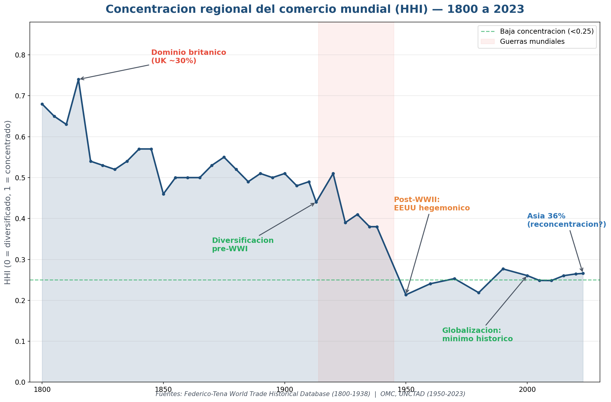
Fuente: FTWTHD (1800-1938), OMC/UNCTAD (1950-2023)
- Calculado por regiones (Europa, Asia, Am. del Norte, etc.) para mantener consistencia de la serie larga
- 1800: HHI ~0.7 — Europa domina el comercio mundial
- 1913: diversificación pre-WWI, más regiones participan
- 2000: mínimo histórico (~0.22) — globalización plena
- 2023: leve repunte — Asia alcanza 36%, ¿reconcentración?
Indicador 4: Cobertura de datos

Fuente: Federico-Tena World Trade Historical Database
- Mide qué % de países tienen datos confiables
- 1800: cobertura baja (pocos registros)
- 1913: cobertura alta (aduanas modernas)
- Siempre reportar la cobertura de las fuentes
- Advertencias: precios vs cantidades, comercio bruto, fuentes distintas
Indicadores de competitividad (5-7)
¿Es el país competitivo en el comercio mundial?
Indicador 5: Balanza comercial
- Mide si un país vende al mundo más de lo que le compra o al revés (en millones de USD FOB, o como % del PIB)
- Fórmula: \(BC = X - M\)
- \(BC\) = balanza comercial (en millones de USD o % del PIB) | \(X\) = exportaciones | \(M\) = importaciones
- \(BC > 0\): superávit comercial (exporta más)
- \(BC < 0\): déficit comercial (importa más)
Balanza comercial Argentina (1960-2023)

Fuente: Banco Mundial / INDEC
- Déficit en Convertibilidad (1991-2001)
- Superávit récord post-crisis 2002
- Ciclo: peso caro → déficit, peso barato → superávit
- Volatilidad extrema comparado con otros países
Balanza comercial comparada (% PIB)
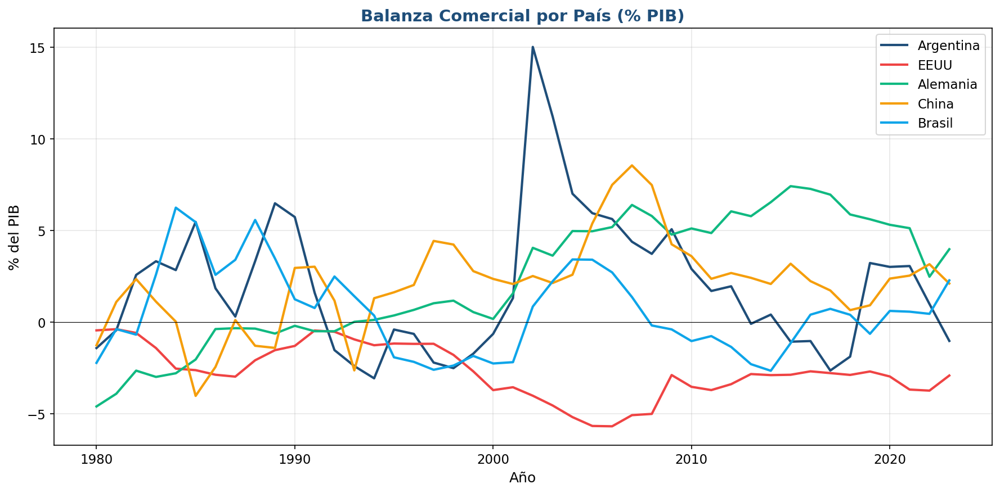
Fuente: Banco Mundial
- EEUU: déficit persistente (privilegio del dólar)
- Alemania: superávit persistente (competitividad industrial)
- China: superávit desde 2000 (fábrica del mundo)
- Argentina: alta volatilidad (ciclo cambiario)
Indicador 6: Apertura comercial
- Mide cuánto pesa el comercio internacional en la economía de un país (en % del PIB)
- Fórmula: \(Apertura = \frac{X + M}{PIB} \times 100\)
- \(X\) = exportaciones | \(M\) = importaciones | \(PIB\) = producto interno bruto (todo en USD corrientes)
- Países grandes (EEUU, Brasil): apertura baja (~25-30%)
- Países pequeños (Singapur, Bélgica): apertura alta (>100%)
Apertura comercial comparada

Fuente: Banco Mundial
- Singapur: 300-400% (re-exportación, es un hub)
- Alemania: ~80% (industria exportadora)
- China: 30-40% (mercado interno creció)
- Argentina y EEUU: 25-35% (economías "cerradas")
Indicador 7: Términos del intercambio (ToT)
- Mide cuántas importaciones puede comprar un país con sus exportaciones (número índice, base 100)
- Fórmula: \(ToT = \frac{P_{exportaciones}}{P_{importaciones}} \times 100\)
- \(ToT\) = términos del intercambio (número índice) | \(P_{exportaciones}\) = índice de precios de lo que vendemos | \(P_{importaciones}\) = índice de precios de lo que compramos
- \(ToT > 100\): mejora (las export valen más que las import)
- \(ToT < 100\): deterioro (las export valen menos)
- Clave para países exportadores de commodities
Términos del intercambio Argentina (1900-2023)

Fuente: CEPAL / INDEC / Ferreres
- 1900-1930: ToT altos (belle époque agroexportadora)
- 1930-2000: deterioro secular (tesis Prebisch)
- 2003-2012: boom de commodities (+50%)
- Post-2012: caída y volatilidad
Indicadores de sostenibilidad (8-9)
¿Es sostenible la situación externa?
La balanza de pagos: el marco
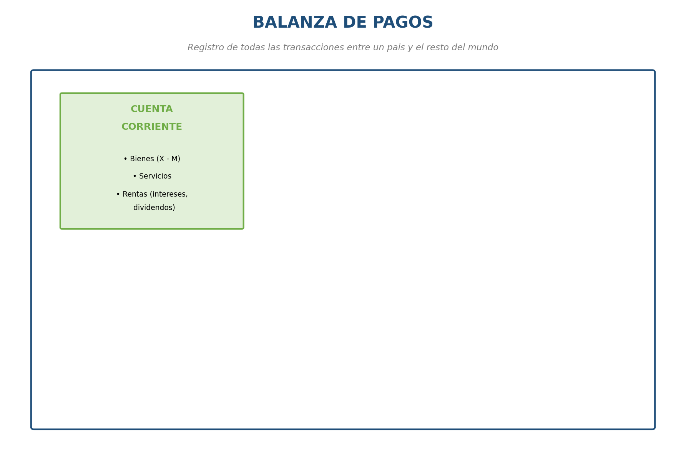
Fuente: Elaboración propia
- Cuenta Corriente: bienes (X-M), servicios, rentas
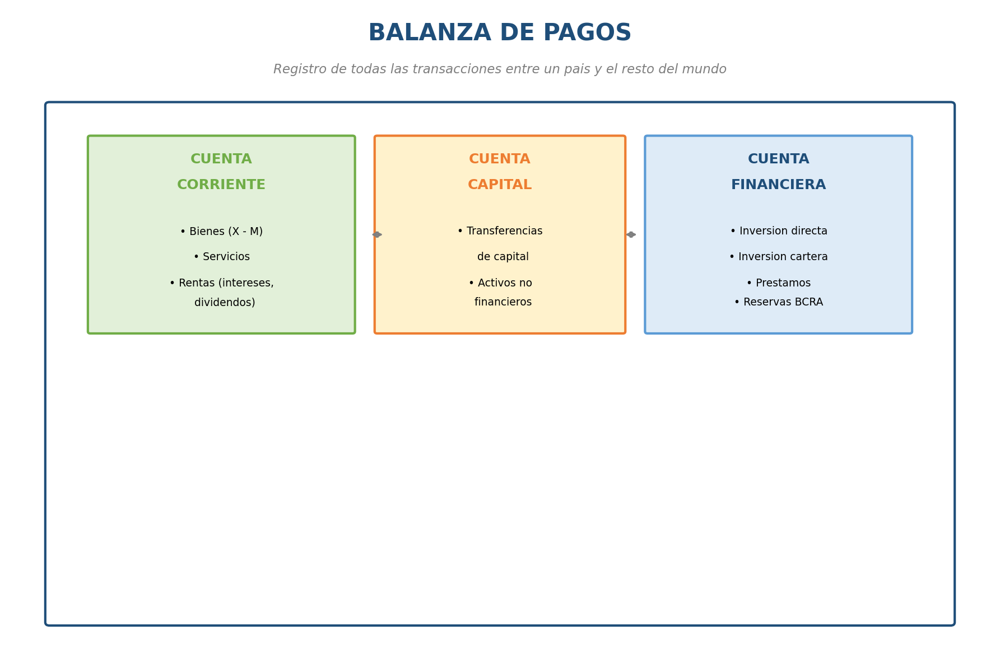
Fuente: Elaboración propia
- Cuenta Capital (transferencias) + Cuenta Financiera (inversiones, préstamos, reservas)
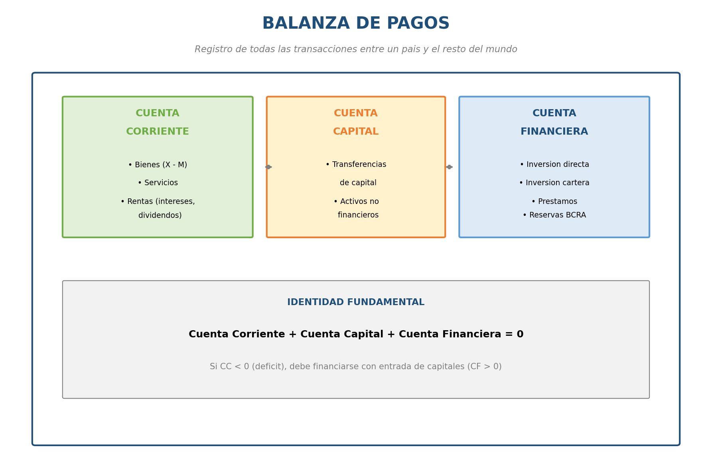
Fuente: Elaboración propia
- Identidad fundamental: CC + CK + CF = 0
Paso 1 / 3
Indicador 8: Cuenta corriente (% PIB)
- Mide si un país está ganando o perdiendo divisas en su relación con el resto del mundo (en millones de USD, o como % del PIB)
- Fórmula: \(\frac{CC}{PIB} \times 100\)
- \(CC\) = saldo de cuenta corriente (en millones de USD) | \(PIB\) = producto interno bruto
- \(CC > 0\): el país gana divisas (superávit)
- \(CC < 0\): el país pierde divisas (déficit) → si persiste, eventualmente crisis
Cuenta corriente Argentina (1990-2024)

Fuente: INDEC / BCRA
- Déficit en Convertibilidad: financiado con deuda
- Superávit 2002-2011: TC competitivo + commodities
- Déficit 2017-2018: apreciación + sequía → crisis
- La CC anticipa las crisis
La identidad ahorro-inversión
De la contabilidad nacional al sector externo
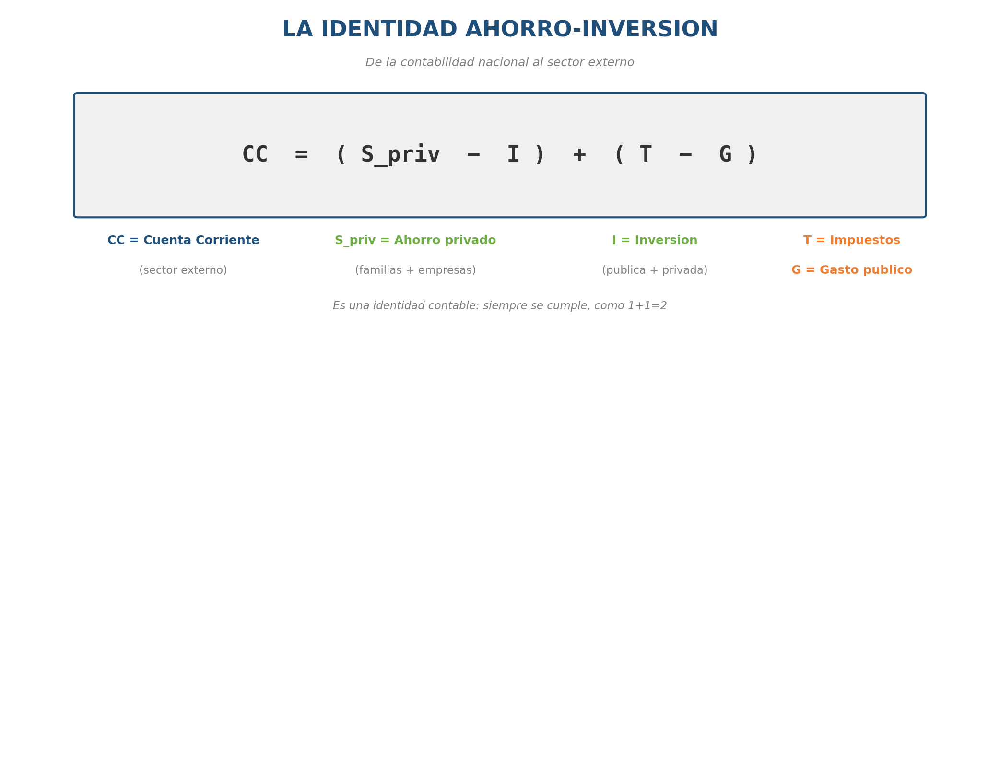
Fuente: Elaboración propia
- \(CC = (S_{privado} - I) + (T - G)\)
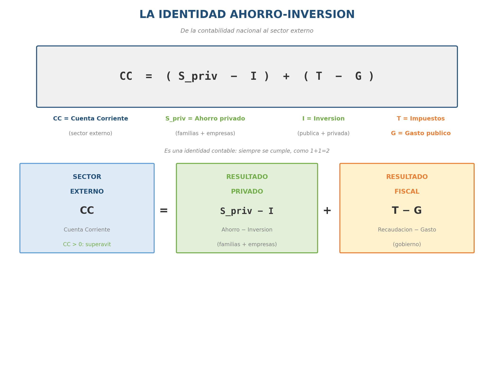
Fuente: Elaboración propia
- \(CC\) = Cuenta Corriente | \((S_{priv} - I)\) = resultado privado | \((T - G)\) = resultado fiscal
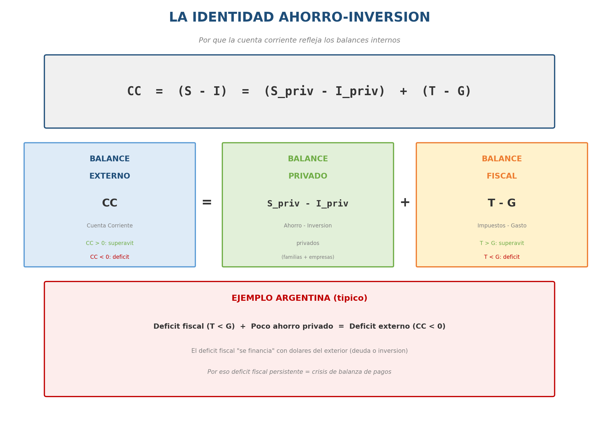
Fuente: Elaboración propia
- Déficit fiscal → más demanda interna → más importaciones → déficit externo → necesidad de financiamiento
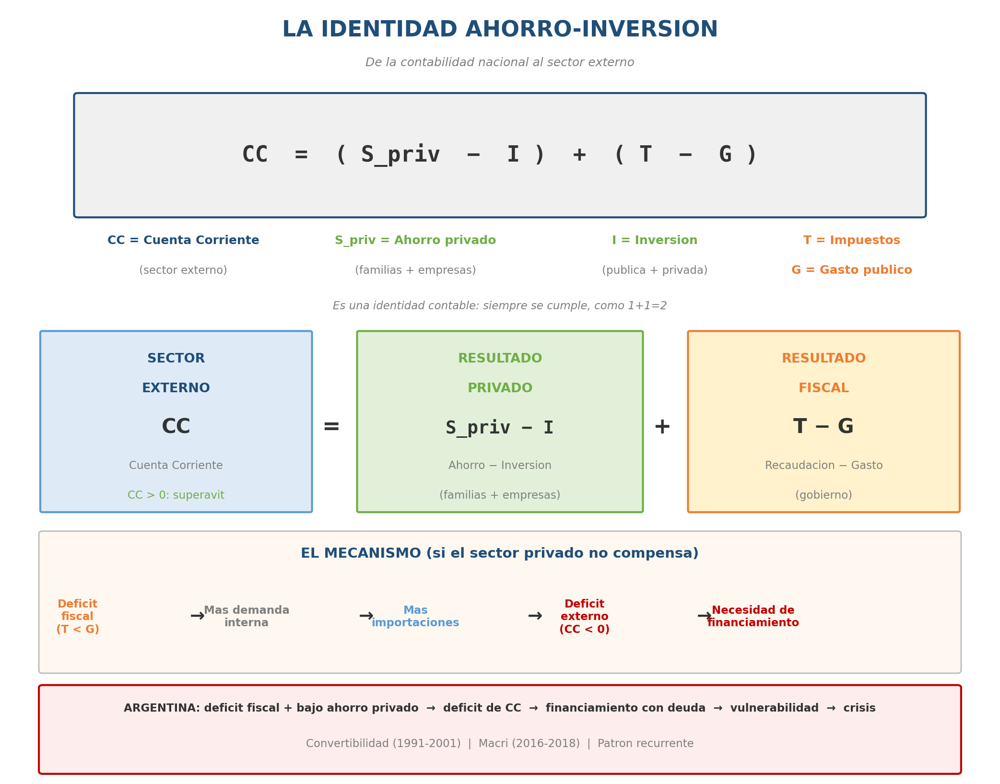
Fuente: Elaboración propia
- Argentina: déficit fiscal persistente + bajo ahorro privado → déficit de CC → endeudamiento → crisis
Paso 1 / 4
Indicador 9: Tipo de cambio real
- Mide si un país es caro o barato en dólares, ajustando por la inflación
- Fórmula bilateral: \(TCR_i = \frac{E_i \times P_i^*}{P}\)
- \(E_i\) = tipo de cambio nominal con el país \(i\) | \(P_i^*\) = nivel de precios del país \(i\) | \(P\) = nivel de precios de Argentina
- \(TCR\) alto = peso barato (competitivo) | \(TCR\) bajo = peso caro (no competitivo)
- Pero Argentina comercia con muchos países → necesitamos un indicador multilateral
ITCRM: el indicador que usa el BCRA
- El ITCRM es un promedio ponderado de los TCR bilaterales con cada socio comercial
- Fórmula: \(ITCRM = \prod_{i} (TCR_i)^{w_i}\)
- \(TCR_i\) = tipo de cambio real bilateral con el país \(i\) | \(w_i\) = peso del país \(i\) en el comercio argentino (exportaciones + importaciones)
- Tres cosas lo mueven: ↑ dólar → ↑ ITCRM | ↑ inflación argentina → ↓ ITCRM | ↑ inflación socios → ↑ ITCRM
- Lo calcula y publica el BCRA diariamente — serie descargable en bcra.gob.ar
Tipo de cambio real Argentina (1997-2024)
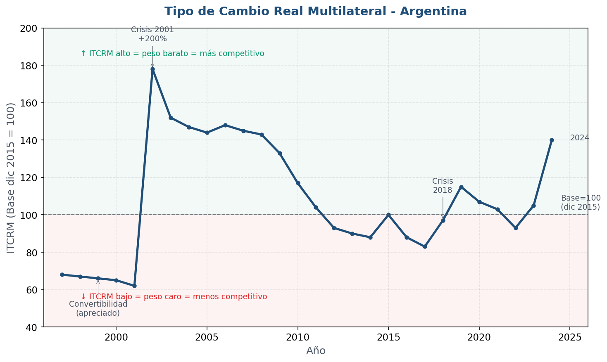
Fuente: BCRA (ITCRM)
- Base 100 = promedio histórico
- < 100 = peso apreciado (caro en dólares)
- > 100 = peso depreciado (barato en dólares)
- Patrón: apreciación gradual → devaluación brusca
Reservas internacionales Argentina

Fuente: BCRA
- Reservas = capacidad de defender el tipo de cambio
- Caen antes de las crisis (2001, 2018)
- Se acumulan en buenos tiempos (2003-2011)
- Regla: mínimo 3 meses de importaciones
Hechos estilizados y desequilibrios
¿Qué patrones vemos con estos indicadores?
Desequilibrios globales: quién financia a quién

Fuente: FMI WEO
- EEUU: déficit persistente (importa capitales)
- China, Alemania: superávit persistente (exportan capitales)
- Este patrón es estable hace décadas
- ¿Es sostenible?
El privilegio exorbitante del dólar

Fuente: FMI COFER
- El dólar es ~60% de las reservas mundiales
- El mundo QUIERE dólares
- EEUU puede "imprimir" la moneda de reserva
- Ningún otro país tiene este privilegio
Asia: la lección de 1997
De deudores a acreedores
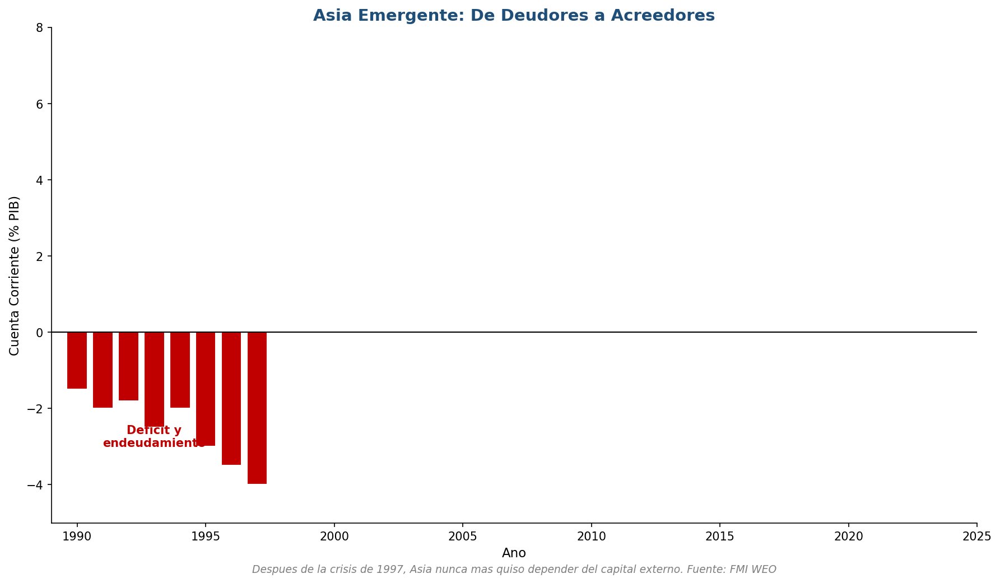
Fuente: FMI WEO
- Antes de 1997: déficit persistente y endeudamiento externo
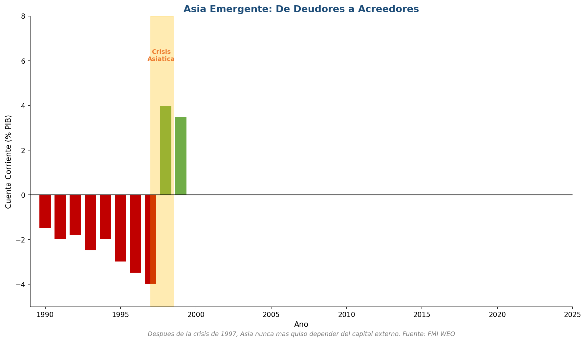
Fuente: FMI WEO
- Crisis asiática 1997-98: colapso brutal, punto de quiebre
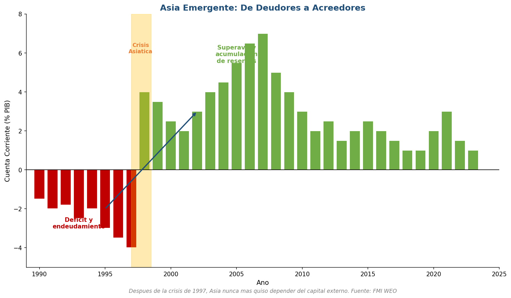
Fuente: FMI WEO
- Post-crisis: superávit permanente, acumulación de reservas. Nunca más depender del capital externo
Paso 1 / 3
El caso argentino
Aplicación de todos los indicadores
El ciclo argentino
El patrón que se repite
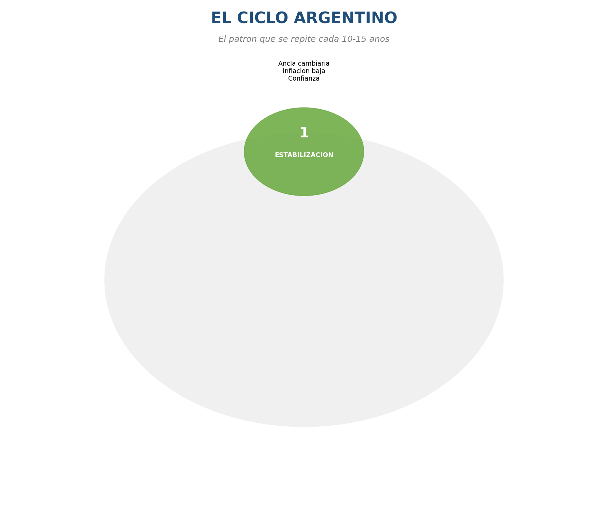
Fuente: Elaboración propia
- Fase 1: Estabilización — ancla cambiaria, inflación baja, confianza
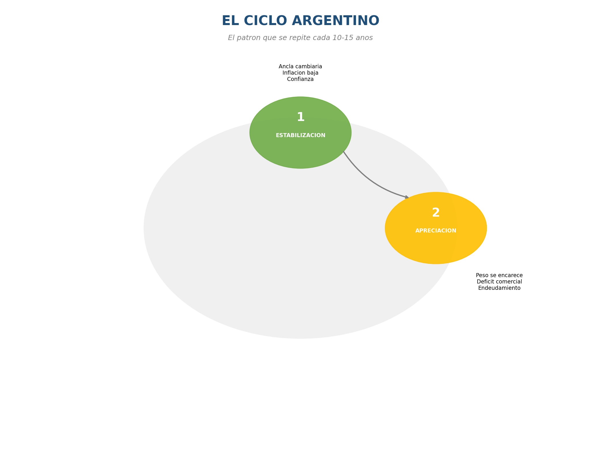
Fuente: Elaboración propia
- Fase 2: Apreciación — peso caro, déficit comercial, endeudamiento
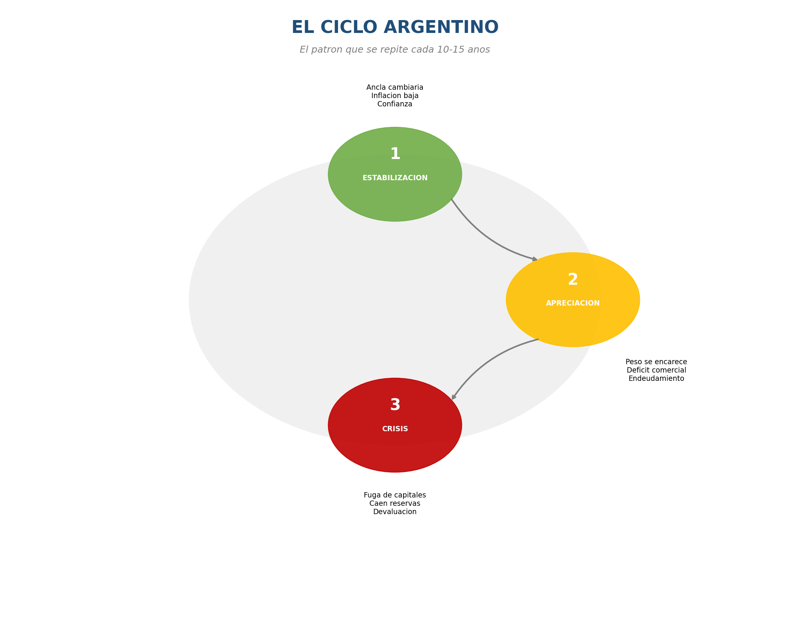
Fuente: Elaboración propia
- Fase 3: Crisis — fuga de capitales, caen reservas, devaluación forzada
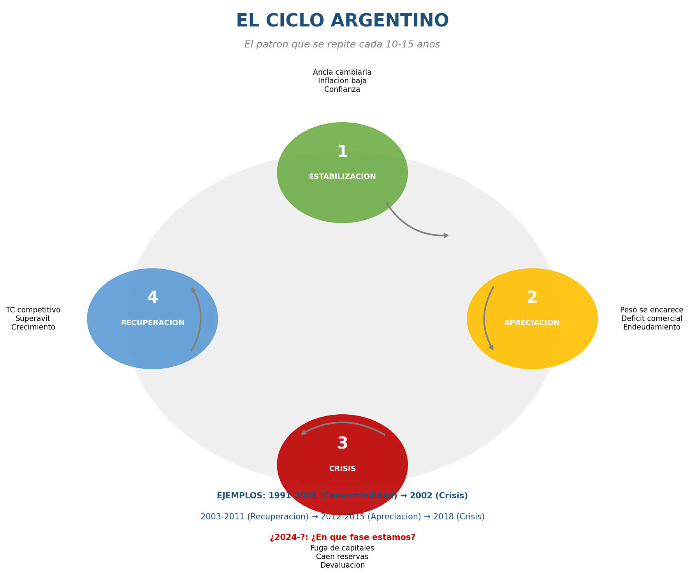
Fuente: Elaboración propia
- Fase 4: Recuperación — TC competitivo, superávit, crecimiento... y el ciclo se repite
Paso 1 / 4
La Convertibilidad: caso de estudio
Todos los indicadores en acción
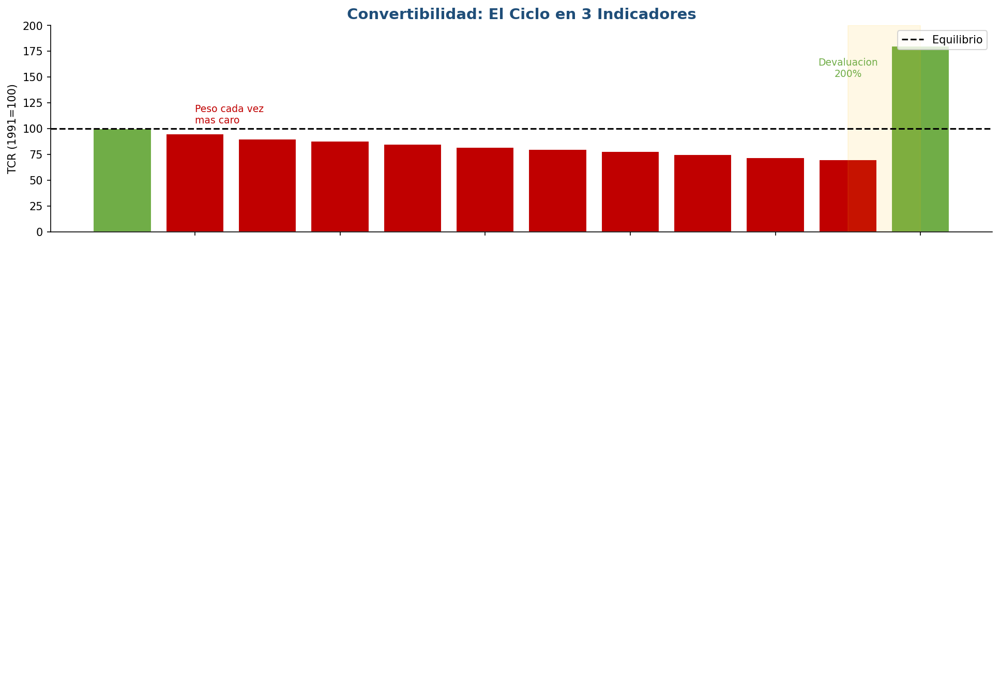
Fuente: BCRA / INDEC
- TCR: cayó de 100 a 70 — peso 30% sobrevaluado
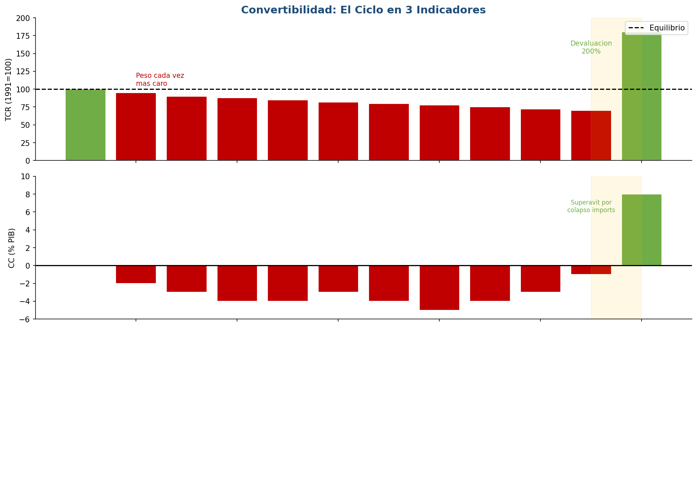
Fuente: BCRA / INDEC
- Cuenta corriente: déficit persistente (-4% a -5% PIB)
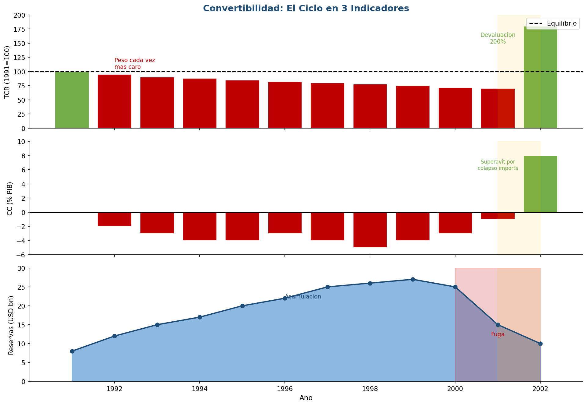
Fuente: BCRA / INDEC
- Reservas: subieron hasta 1998, colapsan en 2001. Devaluación 200% en 2002
Paso 1 / 3
Cierre
Resumen: los 9 indicadores
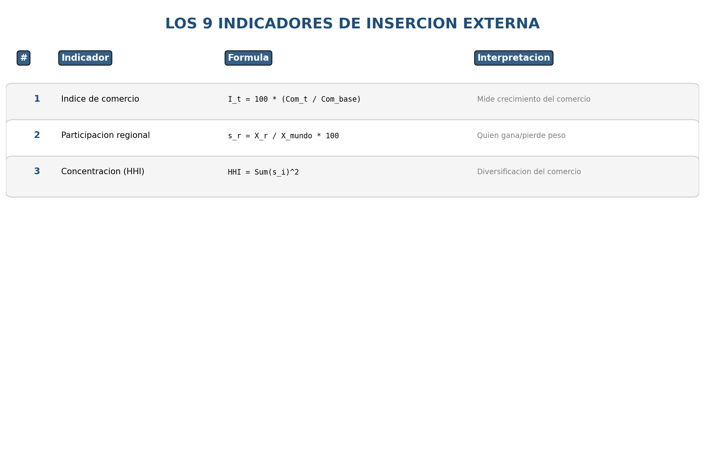
- Indicadores de comercio: índice, participación, concentración (HHI)
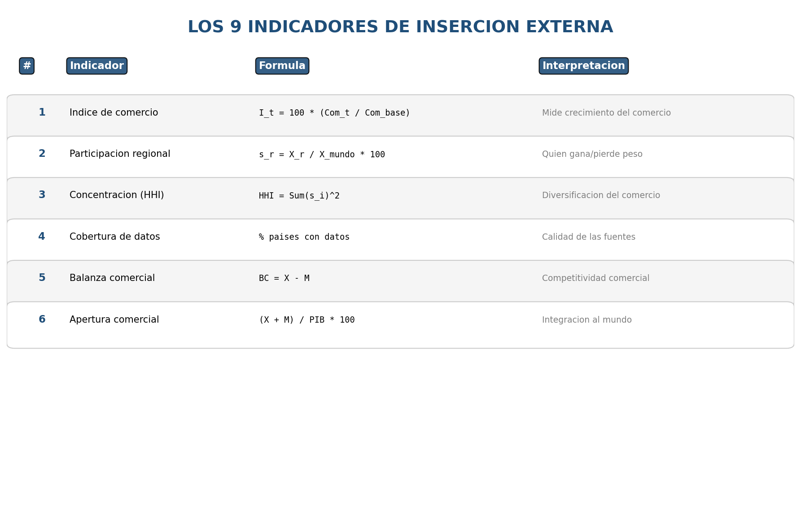
- Indicadores de competitividad: cobertura, balanza comercial, apertura
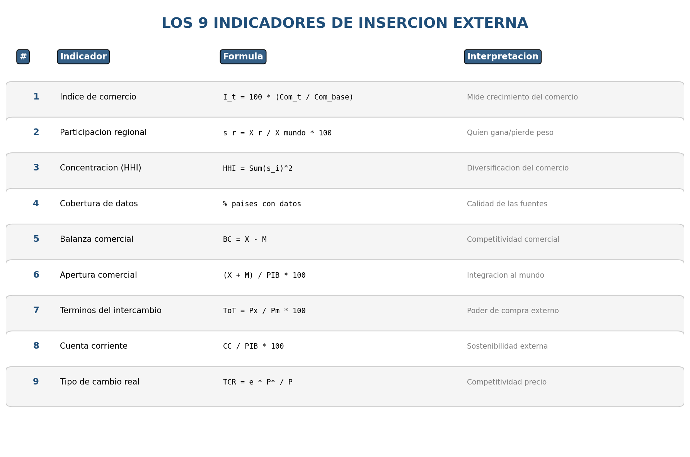
- Indicadores de sostenibilidad: ToT, cuenta corriente, TCR — los que anticipan las crisis
Paso 1 / 3
¿Dónde buscar estos datos?
Fuentes principales por indicador
- Comercio histórico (1-4): Federico-Tena World Trade Historical Database / OMC
- Balanza comercial y apertura (5-6): Banco Mundial (data.worldbank.org) / INDEC
- Términos de intercambio (7): CEPAL / INDEC / Ferreres (series históricas)
- Cuenta corriente y reservas (8): INDEC / BCRA / FMI (World Economic Outlook)
- Tipo de cambio real (9): BCRA — Índice de TC Real Multilateral (ITCRM)
- En el Notebook 1 se conectan directo a la API del Banco Mundial para descargar y analizar estos datos
Notebook 1: Indicadores de comercio mundial
Ejercicio práctico con datos del Banco Mundial
- Descarga de datos en tiempo real desde la API del Banco Mundial (10 países, 1960-2024)
- Apertura comercial, exportaciones, importaciones y cuenta corriente
- No hace falta saber programar: usen ChatGPT u otra IA para generar el código
- Lo importante es formular bien la pregunta e interpretar los resultados
- Link en la página del curso → sección "Ejercicios con datos"
Hechos estilizados: lo que aprendimos
- 1. El comercio puede colapsar (1914-1945)
- 2. EEUU tiene déficit porque emite dólares
- 3. Los desequilibrios globales son estructurales
- 4. Argentina repite un ciclo predecible
- 5. El TCR y la CC anticipan las crisis
Próxima clase
Teorías del comercio
- ¿Por qué comercian los países?
- La visión mercantilista: comercio como guerra
- Adam Smith y las ventajas absolutas
- David Ricardo y las ventajas comparativas
- El debate que sigue vigente
Material complementario
Videos y documentales recomendados
- Ray Dalio — "Principles for Dealing with the Changing World Order" (YouTube, 43 min) — Ciclos hegemónicos: Holanda → UK → EEUU → ¿China? Mapea directamente las 5 etapas que vimos hoy
- Ray Dalio — "How The Economic Machine Works" (YouTube, 30 min) — Ciclos de deuda, balanza comercial y tipo de cambio explicados con animaciones
- "Commanding Heights: The Battle for the World Economy" (PBS, 2002, 3 episodios) — Del mercantilismo a Bretton Woods y la globalización
- "Memoria del Saqueo" (Fernando Solanas, 2004) — La crisis argentina de 2001: cuando la cuenta corriente y la deuda se descontrolan
- "Life and Debt" (Stephanie Black, 2001) — Jamaica y el FMI: qué pasa cuando la apertura comercial destruye la industria local
- "American Factory" (Netflix, 2019, Oscar mejor documental) — Fábrica china en Ohio: globalización, desindustrialización y choque cultural
Asistente de estudio con IA
Toda la bibliografía del curso cargada en NotebookLM
- Cargamos los textos obligatorios y complementarios en NotebookLM de Google
- Pueden hacerle preguntas sobre cualquier tema y responde citando los textos exactos
- Ejemplos: "Explicá la ventaja comparativa de Ricardo con un ejemplo numérico"
- Ejemplos: "Qué dice Prebisch sobre el deterioro de los términos de intercambio?"
- Link en la página del curso → sección "Herramientas de estudio"
Guía de lectura — Unidad 1
Preguntas orientadoras para la bibliografía
- Krugman cap 1: ¿Cuáles son los principales patrones del comercio mundial que identifican los autores?
- Krugman cap 2: ¿Qué registra la balanza de pagos y por qué siempre "cierra"?
- CEPAL 2002: ¿Qué dimensiones tiene la globalización más allá del comercio de bienes?
- CEPAL 2002: ¿Qué asimetrías identifica la CEPAL en el proceso de globalización?
- Frenkel 2008: ¿Por qué el tipo de cambio real es relevante para la estrategia de desarrollo?
- Frenkel 2008: ¿Qué tensiones genera mantener un TCR competitivo con la inflación?
- Transversal: ¿Qué relación hay entre apertura comercial, cuenta corriente y TCR en Argentina?
¿Preguntas?
Economía Internacional | Clase 1